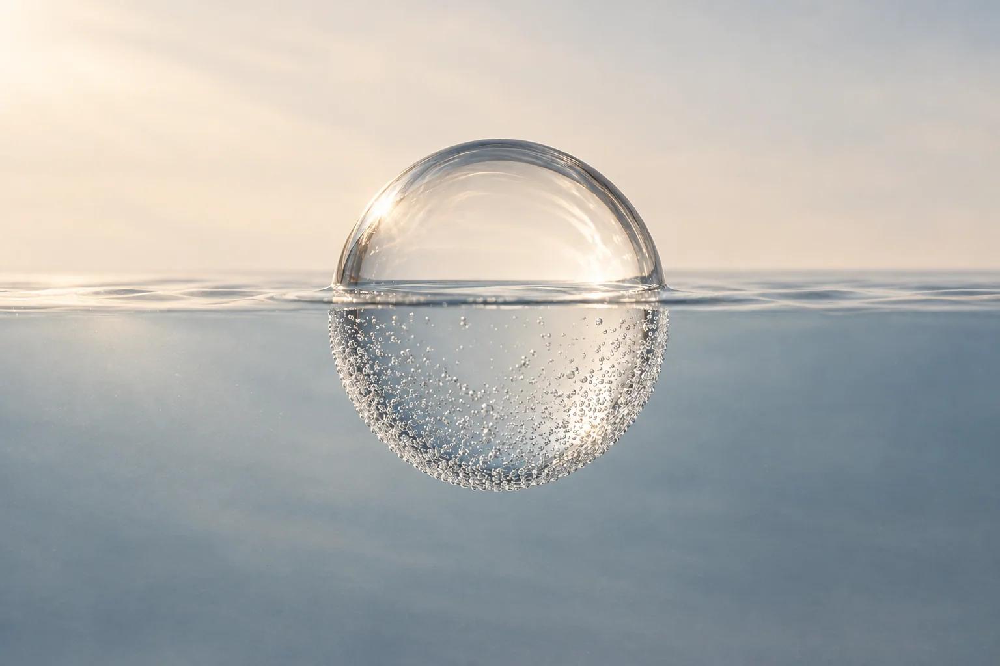

リポソーム化ビタミンC
Lypo-Cリポ・シー
ビタミンCを、小さなカプセルに。
吸収性を追求して、ビタミンCをリン脂質のカプセルに包むリポソーム化。1包に1,000mgを含む、液状のリポ・シーです。[14]
水に混ぜる飲み方例1包を水200mLに。水の量は、本サイトが飲みやすさを考えて示した例です。[14]
Lypo-Cを公式サイトで見るSAME BODY. DIFFERENT FEELING.
01 炭酸泉
02 水風呂
個人の感触を、泡と波紋で表しています。
画面を閉じて、お湯のほうへ。
スマホをしまって
炭酸泉に入ったら、肌につく小さな泡を眺めてみる。温かさは、どこから感じるだろう。返事も、結論もいらない。ただ感じるための時間を、一日の途中に挟んでみよう。
お湯を変えて
炭酸泉のぬくもりと、水風呂のひんやり。「あれ、さっきと違う」。そんな変化に出会えたら、面白い。長く耐えるより、自分はどう感じるか。いつもの入浴を、小さな探検に。
ひと休みして、家へ
お湯を出たら、水分をとって、椅子でひと休み。すぐにスマホへ戻らず、ぼんやりするところまでがお風呂。家では好きな曲を一曲。仕事の続きではない夜を、こんな寄り道から始めてみませんか。
同じ34℃でも、炭酸泉のほうが温かく感じられ、浸かった肌の血流が増えた。健康な男性6人の比較実験で、そんな違いが見られました。[2] ぬるいのに、なぜ温かく感じるんだろう。知ってから入ると、気になることがひとつ増えます。
この実験で見られたのは、炭酸泉に入ったときの温感と皮膚血流の変化です。炭酸泉と水風呂の交代浴によるストレス軽減や睡眠改善を確かめたものではありません。3つの場面は、日常の楽しみ方の提案です。感じ方には個人差があります。
炭酸泉の研究では、深部体温の指標にした鼓膜温は下がりました。「温かく感じる」と「体の芯が温まる」は同じではありません。出典 [2]
お風呂と日常の「なぜ？」を、もっと読むABOUT
「あ、肌が
しゅむしゅむしてきた。」
ぷるむん。
やわらかく、満ちるような感触。
湯気文吾の、体感のことば。
自分のからだが働く。その感覚が、好き。筋トレのように、自分に備わる力へ目を向けられること。私がこの入浴にひかれる理由です。
炭酸泉では、浸かっている部分の皮膚の血管が広がり、肌の血流が増える反応が研究されています。一方、冷たい水では、皮膚の血管を縮めて熱を逃がさないようにします。どちらも体の反応ですが、同じ「血の巡りがよくなる」ではありません。研究で分かっていること ↗
筋トレは感覚のたとえ。鍛える効果や肌の弾力改善を示すものではありません。このサイトの読み方 ↗
まずは外から。次は「水風呂」を押してみる。
個人の感触を、泡と波紋で表したイメージです。
HOW THIS SITE BEGAN
ゆいるの水風呂で、
あれ。今度は、内側から。
ひづめゆで生まれた言葉、
「酸冷交代浴」。
何℃で、何ppmか。
肌の血流は、どう変わるか。
感じたことと、分かったこと。
次に試す人の手がかりに。
体験・命名・構想 湯気文吾のプロフィール

炭酸泉と、水風呂。
そのあいだに、あら不思議。泡と波紋は、感触を表すイメージです。
からだの変化を、楽しもう。
感触を追いかけて、我慢しない。
かけ湯をして、ゆっくり。
泡の重なりを待ちすぎない。
手足から慣らし、短めに。
吐息の変化を待たずに上がる。
水を拭き、冷えない場所へ。
水風呂を見送っても、大丈夫。
施設の湯温と注意書きを確認し、手足からかけ湯をして、ゆっくり入る。肌に並ぶ泡や、お湯の感触を静かに楽しもう。最初は短めに。泡が重なるまで、離れるまでと待たず、寒さやのぼせ、不快感があれば上がる。出るときも、ゆっくり。[12]
入るなら手足から少しずつ慣らし、飛び込まず、頭を沈めず、息を止めない。強い冷たさや痛み、震え、息苦しさ、めまい、動悸があれば中止。周囲に知らせ、安全に出て、冷えない場所で休もう。[6][17][18]
湯温・体調で反応は変わります。一律の分数や回数を目標にせず、施設の案内を優先してください。入浴一般・冷水への注意をもとにした案内です。酸冷交代浴に固有の最適な手順や効果が確立したという意味ではありません。
私の目安は、体中に炭酸の気泡が並び、巡るような感覚を覚える頃。泡が「3階建て」のように重なり、ふっと肌から離れるくらいです。
これは私個人の体感と観察。泡の厚さや離れる瞬間から、血流の量・効果・適切な入浴時間は判断できません。その状態になるまで待つ必要はありません。
私は、吐息が冷たくなったとしっかり感じる頃を目安にしてきました。そこで休憩へ移ると、ととのいやすいと感じます。
同様の表現を使う医師の解説もありますが、湯温・体調を問わず安全を判断できる基準ではありません。変化を待って長く浸からないでください。[19]
炭酸泉は約30℃・1,500ppm以上。水風呂は13℃前後で、公式でも経験者向けと案内される冷たさです。冷たすぎる場合は肩まで浸からず短時間で出る、という施設の注意を優先します。水風呂を見送って休憩しても大丈夫です。
温度・濃度は施設の公式案内によるもの。この体験を、誰にでも合う手順としてすすめるものではありません。炭酸泉の公式案内 ↗ · 水風呂の公式案内 ↗
体調のよい日に、無理のない範囲で。寒さや不調があれば中止して休みましょう。試す前の注意点を読む ↗
A LITTLE PAUSE. A LITTLE WATER.
お湯。水風呂。そして、飲む水。
急がず、ひと口。
休む時間まで味わう、極上のひと休みを。
200mL 程度
コップ1杯を目安に。100–200mL 程度
一度に流し込まず、少しずつ。200mL 程度
汗やのどの渇きに合わせて。健康な成人向けの補給例です。1杯＝200mLとして表示。入浴前後の公的な目安と、暑い環境でのこまめな補給の考え方を参考にしています。必要量は汗・時間・体格で変わり、この量で必ず足りるわけではありません。水分・塩分制限がある方は主治医の指示を優先してください。数字の根拠を読む ↗
19〜20歳の男女674人を対象に、90℃・湿度35％のドライサウナを10分×2回、間に5分の休憩を挟んだ研究。前後の平均体重減少は女性0.37kg、男性0.50kgでした。水分に換算すると約370mL・約500mL相当です。[11]
これは体重変化から推定した水分損失の目安です。炭酸泉や湯船での発汗量とは、分けて考えます。
環境省は入浴前後にコップ1杯程度の水分を案内しています。合間の100〜200mLは、厚生労働省系の暑熱作業向け資料にある「20分ごとに100〜200mL」を参考にした本サイトの休憩時の例です。汗の量や体調に合わせて調整します。[12][13]
長時間にわたり大量に汗をかくなら、ナトリウムを含むスポーツ飲料なども選択肢に。水だけを無理に大量に飲むことは避けます。気分が悪い、めまいがする、といったときは入浴をやめ、施設のスタッフに知らせてください。
FOR YOUR OWN ROUTINE
湯あがりの余韻に、いつもの栄養補給を。
成分だけでなく、吸収を考えた「かたち」で選ぶ。
リポソーム化ビタミンC
ビタミンCを、小さなカプセルに。
吸収性を追求して、ビタミンCをリン脂質のカプセルに包むリポソーム化。1包に1,000mgを含む、液状のリポ・シーです。[14]
水に混ぜる飲み方例1包を水200mLに。水の量は、本サイトが飲みやすさを考えて示した例です。[14]
Lypo-Cを公式サイトで見るイオン化ミネラル
ミネラルを、イオンのかたちで。
吸収に着目したイオン化技術。メーカーが高吸収設計として紹介する、鉄・マグネシウム・亜鉛などを含む液状ミネラルです。[15]
水に混ぜる飲み方例1包を水200mLに。水の量は本サイトの例。1包10g、食塩相当量0.15g。ロット別の分析は公式で確認できます。[15]
MINERALionを公式サイトで見るリポソーム化・イオン化は、各製品が吸収に着目して採用した設計です。
酸冷交代浴のひと休みに、栄養をとる。吸収された栄養素が、からだ中をめぐっていく。そんなことを思い描くと、この一杯まで楽しみになる。湯気文吾は、そんな期待も抱いています。
酸冷交代浴によって吸収がさらに高まるかは、まだわかっていません。
炭酸泉が、話題になる。
その声から、次のお湯へ。
施設名を押すと、紹介と選定理由へ進めます。
| 地域 | 施設 | 口コミの着眼点 | 公式案内 |
|---|---|---|---|
| 北海道・平取町 | びらとり温泉 ゆから | 炭酸の強さへの声 | 公式 ↗ |
| 岩手県・盛岡市 | 喜盛の湯 | 炭酸の強さへの声 | 公式 ↗ |
| 宮城県・仙台市 | スパメッツァ仙台 竜泉寺の湯 | ぬるめ・入り方への声 | 公式 ↗ |
| 千葉県・流山市 | 南柏天然温泉 すみれ | 泡付きへの声 | 公式 ↗ |
| 神奈川県・藤沢市 | 湯乃市 柄沢店 | 湯温・泡の心地よさへの声 | 公式 ↗ |
| 愛知県・名古屋市 | 天空SPA HILLS 竜泉寺の湯 名古屋守山本店 | 露天・ぬるめへの声 | 公式 ↗ |
| 大阪府・箕面市 | 箕面湯元 水春 | 心地よさへの声 | 公式 ↗ |
| 広島県・広島市 | スパシーレ祇園 | ぬるめの露天への声 | 公式 ↗ |
| 愛媛県・松山市 | 伊予の湯治場 喜助の湯 | 温度設定への声 | 公式 ↗ |
| 福岡県・新宮町 | 新宮温泉 ふくの湯 | 泡の刺激・ぬるめへの声 | 公式 ↗ |
口コミに表れた感触や好みを比較しています。
HALL OF FAME
酸冷交代浴の物語に、欠かせない場所。
このサイトの殿堂入りです。
言葉の、発祥の地。
「酸冷交代浴」という言葉が生まれた場所。
命名は湯気文吾。
体感の、はじまりの地。
琥珀色をした、
超高濃度の不感強炭酸泉。
公式案内では、約30℃・炭酸濃度1,500ppm以上。
湯気文吾が「酸冷交代浴」の感触に、
初めて出会った場所。
殿堂入りと風呂あがりのおすすめは、湯気文吾自身の体験に基づくものです。水分をとって、ひと休みしてから。営業日・提供メニューは各店の最新案内をご確認ください。
THE SELECTED 10
泡付き。ぬるめの心地よさ。また入りたい、という声。
炭酸泉そのものへの好評と、サウナ・水風呂の設備を手がかりに選びました。
本サイトの視点で選んだ10施設を、北から南へ掲載しています。口コミの投稿日・選定理由は各施設の「選定の根拠を読む」で確認できます。
炭酸の存在感を、
旅の記憶に。
口コミの着眼点炭酸の強さへの声
他の施設より炭酸を強く感じた、という感想が複数。高濃度炭酸泉と水風呂、乾式サウナを備える北海道の一軒です。
他施設と比べた炭酸の強さと、入浴の心地よさを評価。
Yahoo!トラベル・訪問者口コミ ↗2023-02-20 · りな高濃度炭酸泉を、施設のおすすめとして挙げています。
Yahoo!トラベル・訪問者口コミ ↗2023-01-06 · いとこー2023年の訪問者投稿を参照しています。
炭酸の強さが、
また来る理由に。
口コミの着眼点炭酸の強さへの声
ひとつの炭酸泉に、
決めなくていい。
口コミの着眼点ぬるめ・入り方への声
ぬるめのお湯や壺の炭酸泉を好む口コミを確認。不感炭酸泉、寝ながら入る炭酸泉など、入り方の違いを選べます。
浴槽・水風呂の仕様には男女差や利用条件があります。
泡がつく。
その速さに、驚く声。
口コミの着眼点泡付きへの声
湘南で、
炭酸泉を目当てに。
口コミの着眼点湯温・泡の心地よさへの声
外の炭酸泉。
中の炭酸泉。
口コミの着眼点露天・ぬるめへの声
また浸かりたい。
その湯が、炭酸泉。
口コミの着眼点心地よさへの声
露天の炭酸泉で、
ひと息つく。
口コミの着眼点ぬるめの露天への声
熱さより、
浸かり心地。
口コミの着眼点温度設定への声
施設のお湯のなかでも炭酸泉を一番に挙げる口コミ。広い炭酸の湯と、低めの温度を心地よく感じる声が選定の手がかりです。
口コミ中の温度感は主観です。実際の湯温は浴槽で確認してください。
露天でも、内湯でも。
炭酸泉を選べる。
口コミの着眼点泡の刺激・ぬるめへの声
露天の泡の刺激や、ほどよくぬるい炭酸泉を心地よいとする声。内湯と露天の炭酸泉に、水風呂・サウナがそろいます。
露天炭酸泉で感じた泡の刺激と、心地よさを評価。
利用者の訪問記 ↗2019年・開業直後の訪問記 · モヒカンサウニスト炭酸泉のほどよいぬるさと、入浴の心地よさを評価。
スーパー銭湯全国検索・読者口コミ ↗2020-03-10 · はな根拠にした訪問記・口コミは2019〜2020年。現設備は公式案内を参照。
全国の公開口コミを探索し、炭酸泉自体の泡付き・強さの印象・温度・心地よさに好意的な言及があり、炭酸泉・水風呂・サウナを備える施設を選びました。施設全体の星評価を、そのまま炭酸泉の評価には置き換えていません。別の投稿者名義による声を複数確認しています。投稿者の独立性や投稿の動機は未確認です。
「炭酸泉」といった言葉で探した口コミには検索上の偏りがあります。施設ごとに同じ期間・同じ件数の全投稿を集計できていないため、全国の口コミに占める好評の割合や、1位から10位の統計的順位は示していません。本サイトの視点による推奨10選です。
口コミは個人の感想を要約したもの。古い投稿・改装前の投稿も含みます。泡付きや刺激の印象と、浴槽内の溶存CO₂濃度の測定値は区別しています。
調査日 2026年10月21日。殿堂入り2施設は10選とは別枠です。
SEND A LITTLE WONDER.
「しゅむしゅむ」「ぷるむん」って、どんな感じだろう。
気になるあの人に、この小さな不思議を。
FOLLOW YOUR CURIOSITY
「やってみたい」の、その先へ。
体験の話と、研究で分かったことを分けて読めます。
炭酸泉と水風呂の、感じ方の違い。
研究で分かっているところまで。
炭酸泉や温冷刺激についての研究から、感触を考える手がかりをたどります。これらの体感のことばに対応する仕組みは、まだ分かっていません。
気になる項目を選ぶと、研究の内容が開きます。
38℃の炭酸泉に両下腿を浸けた実験では、同じ温度の水道水に比べて、皮膚血流の増加が大きくなりました。皮膚血流の増加が確認される一方、筋肉の酸素化への追加の影響は小さかったと報告されています。
別の34℃の実験では、肌の血流が増えるとともに、同じ温度の真水より温かく感じられました。お湯の温度だけでは、感じる温かさは決まらない、という手がかりです。[2]
ただし、このとき深部体温の指標は下がっています。「温かく感じる」と「体の芯が温まる」は別のこと。血流の増加だけが温感の原因だとも、この実験では断定できません。
読み取れる範囲確認されたのは、肌の血管を流れる血液が増えたことです。これだけでこの感触の原因や、全身の血流が最大になることまでは説明できません。
34℃の炭酸泉と真水を比べた実験では、炭酸泉の方が温かく感じられ、浸かっている部分の皮膚血流も増えました。一方、深部体温の指標として測った鼓膜温は、炭酸泉浴中に低下しました。
読み取れる範囲温かく感じることと、体の深部が温まることは一致するとは限りません。ここで測ったのは温かさの感じ方です。
冷水に浸かると、皮膚血管の収縮などで熱の放散を抑えます。条件によっては熱産生も増えます。14℃の水に1時間浸かった実験では、代謝が増える一方で直腸温は下がりました。
読み取れる範囲体が熱をつくろうとする反応と、実際に体温が上がることは別です。サウナ直後の短時間の水風呂へ、そのまま当てはめることはできません。内側から広がるような感触の原因も、この研究だけでは特定できません。
体が温まると、発汗や皮膚血管の拡張を通じて熱を逃がそうとします。温熱による発汗・皮膚血管拡張にも、寒冷による血管収縮にも、交感神経が関わります。
読み取れる範囲暑さと寒さでは、体温を保つために使う反応が変わります。単純な「交感神経と副交感神経の交代」や、「自律神経が整った」ことの証明にはなりません。
ここからは、まだ仮説。
温度感覚の変化や血管の反応が、この感触に関係する可能性はあります。ただし、今回確認した研究では、その因果関係は検証されていません。
「血流が最大になる」「水風呂で深部体温が上がる」「体内で泡が発生する」という説明を、この感触から導くことはできません。体験の言葉を大切にしながら、仕組みは問いとして残します。
何℃で、何ppmか。
ふたつの数字を、
一緒に見る。
炭酸泉を科学から見分けるなら、確かめたいのは浴槽内の湯温と、溶けているCO₂の濃度。研究で確認された事実を、選ぶときの手がかりにします。
34℃や38℃の炭酸泉で、同じ温度の真水よりも、浸かっている部分の皮膚血流が増えた研究があります。炭酸泉の作用を、熱さだけで評価することはできません。[2][1]
CO₂は、同じCO₂分圧・水質で平衡状態を比べると、入浴に使う温度域では低温ほど水に溶けやすくなります。ただし、実際の浴槽の濃度はCO₂の供給などにも左右されます。[8]
確認するのは、入る浴槽の温度。
温度計や施設の掲示で確かめ、自分の体調に合わせます。
健康な成人12人を対象に、37℃で0〜1,000ppmの複数の濃度を比べた研究では、調べた範囲で、濃度が高いほど皮膚に近い組織の血流増加が大きくなりました。[7]
濃度の確認には、溶存CO₂の測定値を使います。目に見える泡の量だけで「何ppmあるか」は判定できません。分析では、遊離CO₂と炭酸水素イオンも区別されます。[10]
確認するのは、浴槽内の測定値。
「高濃度」という表示に加え、数値と測定条件を確認します。1,000ppmを超えれば効果が増え続ける、という結論はこの研究からは出せません。
以下は別々の研究です。入浴部位や時間が異なるため、この表から「最適な温度・濃度」を決めることはできません。
| 湯温 | CO₂濃度 | 対象・入浴条件 | 確認されたこと |
|---|---|---|---|
| 34℃ | 約1,000ppm | 男性6人 横隔膜の高さまで・20分・5日間 | 同温度の真水より皮膚血流と温感が増加。鼓膜温は低下。[2] |
| 37℃ | 0・100・300・600・800・1,000ppm | 健康な成人12人 胸の高さまで・15分 | 調べた濃度範囲で、皮膚に近い組織の血流増加に濃度依存性。[7] |
| 38℃ | 約1,000ppm | 男性10人 両下腿・10分 | 同温度の水道水より皮膚血流の増加が大きい。[1] |
← 表は横にスクロールできます →
表は炭酸泉浴の実験条件です。入り方は「無理なく楽しむために」をご確認ください。
AT THE BATH
源泉の分析値、装置の設定値、浴槽内の測定値は、測っている場所や意味が異なります。入浴するお湯を比較するには、浴槽内で測った温度と溶存CO₂濃度、その測定日時を確認すると判断材料がそろいます。
この浴槽は何℃で、溶存CO₂は何ppmですか。
浴槽内で測った値ですか？
施設の掲示やスタッフへの確認に使える質問です。研究と測定の考え方を、浴槽を選ぶ手がかりに。
「良い」を、熱さや泡の印象だけで決めず、条件を知って選ぶ。体感の違いを楽しむための、科学のものさしです。
昨日と同じお湯でも、
今日は、ちがうかもしれない。
湯気文吾の実践メモ
低温の炭酸泉を楽しむときは、先にサウナ → 水風呂 → 外気浴を3セットほど行う、という私の経験があります。「そうでないと寒いから」です。
私個人の実践メモです。回数を合わせず、寒さや疲れがあれば中止して休んでください。
具体的な入り方はこちら。冷水は心臓や呼吸にも急な負担をかけます。[18]
消費者庁の注意喚起を読む ↗KNOW WHY. ENJOY MORE.
体験・命名・構想は湯気文吾によるものです。研究紹介は下記の論文・公開資料に基づきます。個別研究の結果を、酸冷交代浴全体の健康効果や、すべての人に共通する感触の保証として扱っていません。
今回の入浴案内の資料確認日 2026年10月23日。
既存資料確認日 2026年10月22日。このサイトの読み方